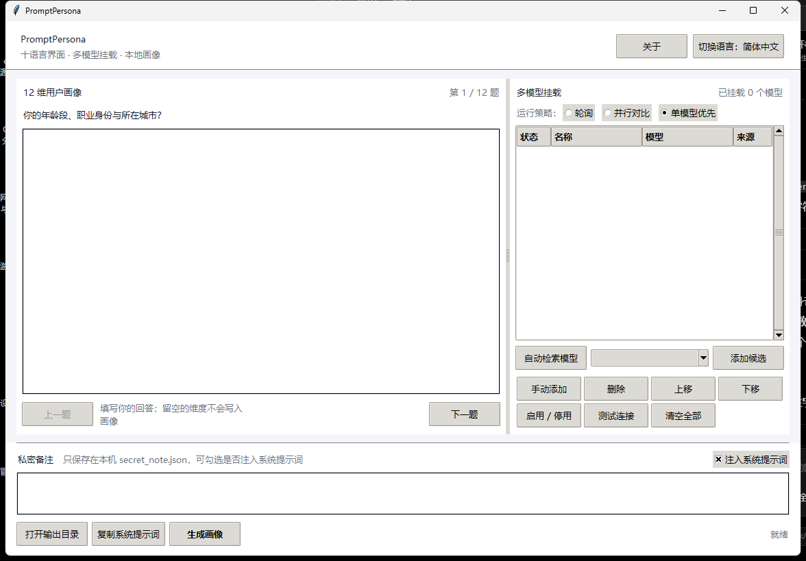
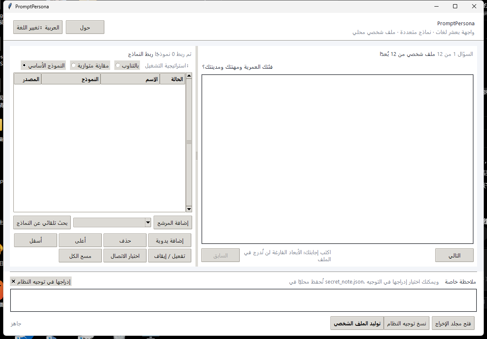

What it actually does
12 fixed dimensions
Identity, language, tone, domain, rhythm, decision style, format preference, taboos, goals. Same questions every time, so profiles stay comparable across versions.
Three files you keep
persona_system.txt to paste anywhere, persona.json with stable keys for scripts, config.json for your models and answers. All local.
Any OpenAI-compatible model
OpenAI, DeepSeek, Qwen, Kimi, Gemini, OpenRouter, Groq, or a local Ollama / LM Studio endpoint. Your key never leaves your machine.
10 UI languages, RTL included
Chinese, English, Arabic (right-to-left), Japanese, Korean, Spanish, French, German, Portuguese, Russian. Translations are enforced by tests.
Three execution strategies
Poll (rotate quota), Parallel (compare up to 8 models side by side), Primary (just your favourite).
Zero dependencies
Python standard library + Tkinter only. No pip install, no Electron, no 200 MB runtime.
How it works
- Answer the interviewTwelve short questions, each skippable. Empty answers are omitted, never stored as blanks.
- Pick a model and strategyBuilt-in catalog or a manual base URL. Requests run on background threads, so the window never freezes.
- Generate and pasteYou get a system prompt tuned to one of three strategies, plus the JSON profile behind it.
Screenshots

Simplified Chinese — questionnaire on the left, model setup on the right.

Arabic — the whole layout mirrors for RTL.
Run it locally
git clone https://github.com/luoyuda123/PromptPersona.git
cd PromptPersona
python main.py # Windows shortcut: 启动.batNo pip install step — the app imports only the standard library. On a local endpoint, leave the API key empty: http://127.0.0.1:11434/v1 + qwen2.5:7b is a working Ollama setup.
How it compares
| PromptPersona | Copy-pasting a prompt | Cloud persona service | |
|---|---|---|---|
| Where your data lives | local files you can read | wherever you paste | vendor servers |
| Reusable artifact | persona.json + persona_system.txt | scattered text | locked in an account |
| Model freedom | any OpenAI-compatible endpoint | any | only the vendor's models |
| Cost | free, MIT | free | usually metered |
FAQ
Does it send my answers anywhere?
No. Answers and API keys are written to config.json next to the app. The only network call is the one you trigger against your own model endpoint.
Why is the exe unsigned?
Code-signing certificates cost money and this is a free MIT project. The build comes from GitHub Actions; the SHA-256 of each release is published in the README so you can verify the file yourself.
Can I use it without any API key?
Yes, with a local model. Point the base URL at Ollama, LM Studio or vLLM and leave the key empty.
Is there a Mac or Linux build?
The source runs anywhere Python 3.9+ and Tkinter exist (python main.py). Only Windows ships a prebuilt exe today.
What exactly are the 12 dimensions?
Identity & background, language & region, communication style, domain expertise, interests, work rhythm, decision preferences, technical skill, format preferences, taboos, goals, and free-form notes. Keys are dim1…dim12 in persona.json.
If it saves you time
A star on GitHub is the only way a small MIT project like this gets found. No newsletter, no ads — just people passing it on.